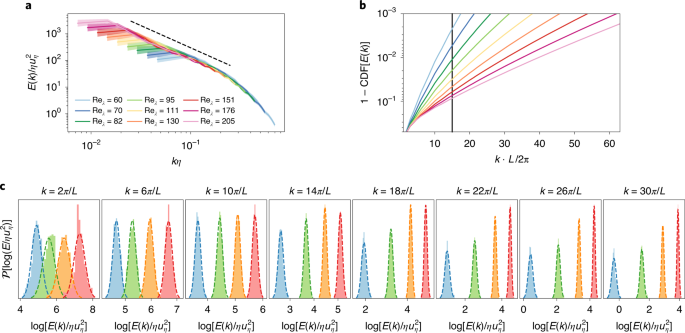

Automating turbulence modelling by multi-agent reinforcement learning
Note: this is a Publisher Correction (Erratum) of the original research article. The digest below covers the substantive findings of the original paper. Multi-agent reinforcement learning (MARL) can automate the discovery of turbulence closure models for large-eddy simulations (LES) of isotropic turbulence, outperforming classic physics-based models (Smagorinsky, dynamic Smagorinsky). The MARL-derived policy generalizes across Reynolds numbers and grid sizes unseen during training, overcoming the compounding-error problem that plagues supervised learning approaches to subgrid-scale (SGS) modelling.
Why It Matters
- Breaks the supervised-learning bottleneck in scientific simulation. All prior data-driven turbulence models trained by supervised learning on filtered DNS data; MARL instead optimizes directly against simulation statistics, eliminating the a priori / a posteriori gap and accumulation of modelling errors.
- Delivers genuine generalization. The learned policy trained on Reλ ∈ {65–163} remains stable and accurate up to Reλ = 205 and transfers across grid resolutions (323 → 1283) — a capability that purely supervised models systematically lack.
- Opens a solver-agnostic path. Because the reward can be any measurable statistic (energy spectra, wall shear stress, or even experimental measurements), MARL does not require DNS capability or a differentiable solver — it can train on experimental targets.
- Establishes RL as a discovery tool for PDEs. The framework is explicitly not restricted to Navier–Stokes; any non-linear conservation law with a closure problem can be attacked in the same way, broadening the scope far beyond turbulence.
Why Nature Machine Intelligence (Editorial Fit)
- Methodological novelty at the interface of ML and fundamental physics: first demonstration of MARL as an automated model-discovery tool for a well-established class of PDE simulations, matching NMI's appetite for foundational ML contributions.
- Strong generalization result: the paper does not just fit data — it demonstrates out-of-distribution stability, a hallmark of impactful scientific ML.
- Open-science infrastructure: all training code (smarties, CubismUP 3D, MARL_LES coupling) and reference data are released on GitHub, making it a reusable platform contribution.
- High downstream impact: turbulence modelling sits at the intersection of climate forecasting, aerospace engineering, and oceanography — results with transferable importance beyond a single domain.
Core Data — Sources & Volume
- DNS reference data
- Direct numerical simulations (DNS) of forced isotropic turbulence on a 5123 grid for Taylor–Reynolds numbers Reλ ∈ [60, 205] (log increments). 20 independent DNS runs per Reλ are performed for statistics; each run lasts 20 τI. Produced internally with CubismUP 3D (github.com/cselab/CubismUP_3D).
- Training LES
- Thousands of LES on a 323 grid for Reλ ∈ {65, 76, 88, 103, 120, 140, 163} (7 Reynolds numbers). Each LES lasts up to 20 τI. Multiple worker processes run in parallel. Total training: 107 policy gradient steps.
- Evaluation LES
- Held-out Reλ ∈ {60, 82, 111, 151, 190, 205} at grids N = 323, 643, 1283; 100 τI integration for statistics.
- RL library
- smarties (github.com/cselab/smarties) — open-source RL library with V-RACER + ReF-ER algorithm; designed for high-performance interoperability with simulation codes.
- Replay memory
- NRM = 106 experiences; mini-batch size B = 512; Adam optimizer, learning rate η = 10−5.
- Availability
- All reference data and scripts on GitHub: github.com/cselab/MARL_LES. Both DNS and LES solvers open-source.
| Dataset / Code | Role | Volume / Scope | Access |
|---|---|---|---|
| CubismUP 3D (DNS) | Reference turbulence data | 5123 grid, Reλ ∈ [60, 205], 20 runs per Re | GitHub |
| CubismUP 3D (LES) | Training environment for MARL agents | 323–1283 grids, 7 training Reλ | GitHub |
| smarties (RL library) | Policy optimization (V-RACER + ReF-ER) | 107 gradient steps, NRM = 106 | GitHub |
| MARL_LES coupling | Reproducibility — data & scripts | Full training pipeline | GitHub |
Note: all data used in this paper are synthetically generated (no external observational databases). Numbers above are taken verbatim from the Methods section of the original article.
Core Methods
- Multi-agent RL (MARL) for subgrid-scale modelling: Nagents = 43 cooperative agents distributed across the LES grid; each observes 5 invariants of the velocity-gradient tensor and 6 of the Hessian (local, dims = 28) plus global energy-spectrum modes — acting to set the Smagorinsky coefficient Cs2(x, t) via linear interpolation.
- Reward design: reward functions based on (1) minimizing Germano identity error (rG) and (2) maximizing log-likelihood of LES energy spectrum against DNS statistics (rLL); rLL policy performs best and remains stable across all tested Reλ.
- V-RACER + ReF-ER algorithm: off-policy policy gradient with experience replay; ReF-ER adds a trust-region constraint (importance-weight ratio C = 1.5) and KL-penalty to stabilize multi-agent training where single-agent update rules are imprecise.
- Policy network: 2 hidden layers, 64 units each, tanh activations, skip connections; outputs Gaussian policy mean μw and standard deviation σw, plus state-value estimate vw.
- Baselines: standard Smagorinsky model (SSM, empirically tuned Cs) and dynamic Smagorinsky model (DSM, Germano identity) — both classical physics-derived approaches.
- Evaluation metrics: log-likelihood of LES energy spectra vs. DNS statistics; velocity structure functions S2(r); turbulent kinetic energy and integral length scale across Reλ and grid sizes not seen in training.
Core Figures & Tables
Figures shown are from the original research article (DOI: 10.1038/s42256-020-00272-0); the Publisher Correction itself contains no figures.





Tables: no tables in main text (Tables = 0). Publisher Correction article itself (this entry) has no independent figures.